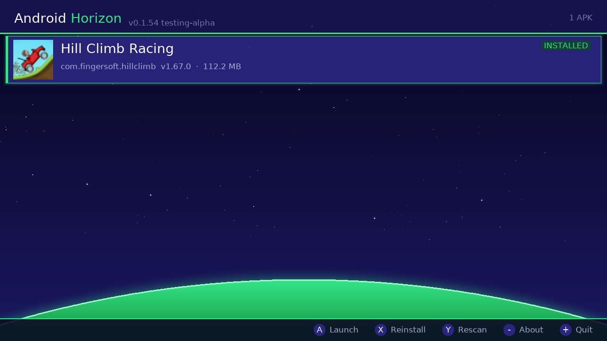
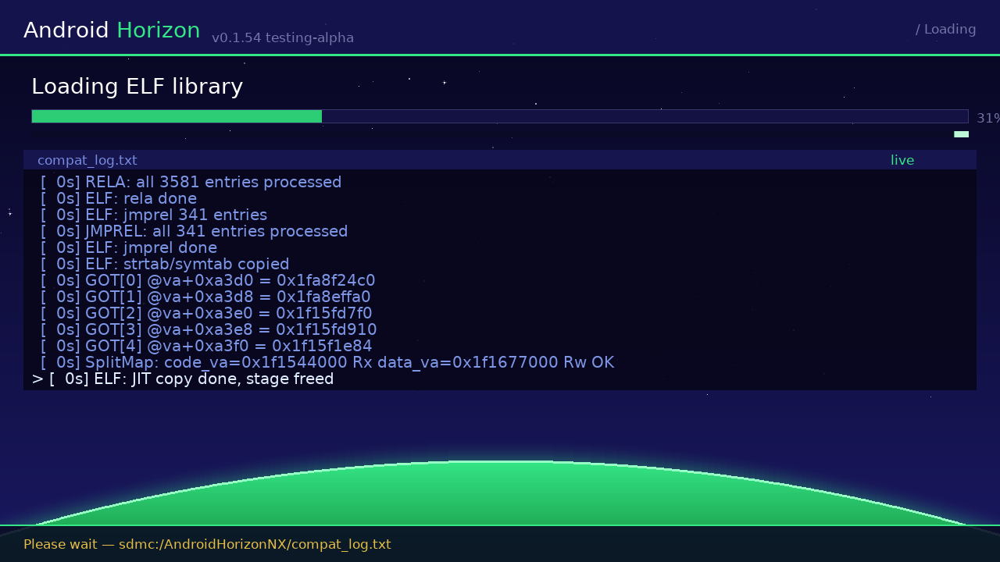
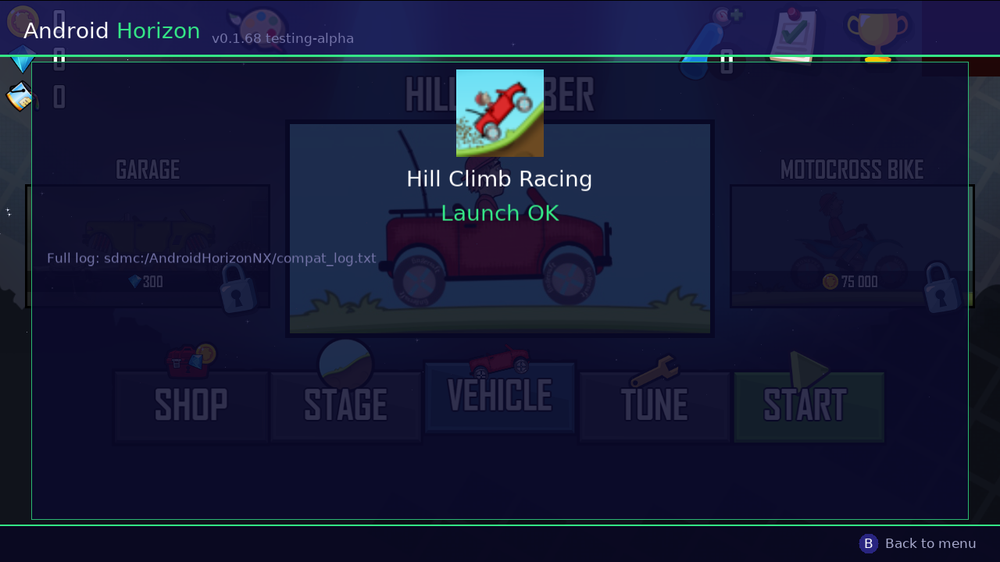
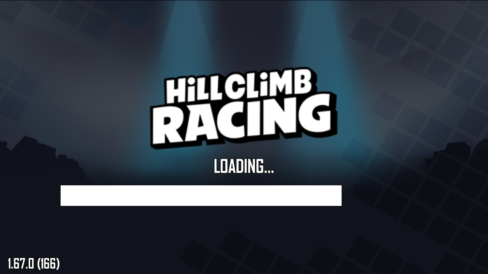
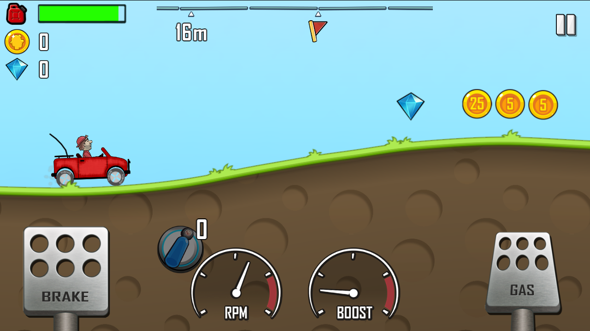

<title>Viridite — Android games, natively on Switch</title>
<meta charset="utf-8">
<meta name="viewport" content="width=device-width, initial-scale=1">
<meta name="description" content="A compatibility/translation layer that runs Android NDK games directly on Nintendo Switch's Horizon OS — no Android OS, no emulator.">
<meta property="og:title" content="Viridite">
<meta property="og:description" content="Run Android NDK games natively on Nintendo Switch's Horizon OS — no Android OS, no emulator, no VM.">
<meta property="og:image" content="https://viridite.aaronworld.uk/assets/img/screenshots/ui_menu.png">
<meta property="og:type" content="website">
<meta name="twitter:card" content="summary_large_image">
<link rel="canonical" href="https://viridite.aaronworld.uk/">
<link rel="icon" href="assets/img/logo.svg">
<link rel="stylesheet" href="assets/style.css?v=8">
<script type="application/ld+json">
{
  "@context": "https://schema.org",
  "@type": "SoftwareApplication",
  "name": "Viridite",
  "applicationCategory": "Emulator",
  "operatingSystem": "Nintendo Switch (Horizon OS)",
  "description": "A compatibility/translation layer that runs Android NDK games natively on Nintendo Switch's Horizon OS — no Android OS, no emulator, no VM.",
  "url": "https://viridite.aaronworld.uk/",
  "codeRepository": "https://github.com/Viridite/Viridite",
  "license": "https://github.com/Viridite/Viridite/blob/main/LICENSE",
  "author": { "@type": "Person", "name": "aaronworld.uk", "url": "https://aaronworld.uk" }
}
</script>

<header class="site">
  <div class="wrap bar">
    
    <span class="brand">Virid<span>ite</span></span>
    <button class="nav-toggle" id="nav-toggle" aria-label="Toggle navigation" aria-expanded="false">
      <svg viewBox="0 0 24 24" fill="none" stroke="currentColor" stroke-width="2" stroke-linecap="round"><line x1="3" y1="6" x2="21" y2="6"></line><line x1="3" y1="12" x2="21" y2="12"></line><line x1="3" y1="18" x2="21" y2="18"></line></svg>
    </button>
    <nav class="site" id="nav-menu">
      <a href="index.html" class="active">Home</a>
      <a href="compatibility">Compatibility</a>
      <a href="roadmap.html">Roadmap</a>
      <a href="credits.html">Credits</a>
      <a href="docs/index.html">Docs</a>
      <a href="https://github.com/Viridite">GitHub</a>
      <a class="cta" href="https://github.com/Viridite/Viridite/releases">Download</a>
    </nav>
  </div>
</header>

<main>
  <div class="wrap">

    <div class="hero">
      
      <h1>Android games, running on <span>Nintendo Switch</span> — for real</h1>
      <p class="tagline">Not an emulator. No Android OS underneath. The game's actual ARM64 code runs directly on the Switch's own chip, with a compatibility shim standing in for everything Android normally provides.</p>
      <div class="btn-row">
        <a class="btn primary" href="https://github.com/Viridite/Viridite/releases">Download latest release</a>
        <a class="btn secondary" href="docs/index.html">Read the docs</a>
      </div>
    </div>

    <div class="callout warn">
      <strong>Read this first:</strong> this is a very early, experimental project — most of the code was written by Claude (Anthropic's AI) working alongside a non-developer who does the hardware testing and calls the shots on direction. Treat it accordingly. Check the <a href="compatibility">compatibility page</a> before assuming your game will run — it probably hasn't been tried yet.
    </div>

    <section>
      <h2>What this actually is</h2>
      <p>It's Wine, basically, except the "Windows app" is an Android game and the "Linux" is a game console. There's no emulation happening and no hidden Android install — the game's native <code>.so</code> library gets loaded and run directly on the Switch's Tegra X1, the same ARM chip that's in a lot of Android phones. What Viridite actually provides is a shim underneath it: enough of libc, JNI, OpenGL ES, and asset/file handling that the game never notices it isn't talking to a real Android device.</p>
      <p>Because of that, what runs and what doesn't comes down to what the shim happens to implement, not how "big" or "small" a game is in the abstract. Right now that means older, simple 2D games with an <code>arm64-v8a</code> build, OpenGL ES rendering, no Play Services dependency, and saves that stay on-device. Hill Climb Racing is the one game that's actually been pushed through this end-to-end — see below for exactly what that took.</p>
      <div class="card">
        <h3>What's confirmed working, on real hardware</h3>
        <p style="margin-bottom:0">ELF loading and linking with zero unresolved symbols, real libnx threads standing in for pthreads, actual touch input reaching the game's own input handlers, real audio decoding (OGG/MP3/Opus/FLAC) through a custom SDL2_mixer backend, a locked 60fps during gameplay, and saves that persist across launches.</p>
      </div>
    </section>

    <section>
      <h2>Seen on real hardware</h2>
      <p>Every screenshot below came off the Switch itself — the launcher saves a copy of each UI screen, and the game loop grabs the actual framebuffer at a few milestone frames. Nothing here is a mockup.</p>
      <div class="shots">
        <figure>
          <div class="frame"></div>
          <figcaption>The launcher's APK browser</figcaption>
        </figure>
        <figure>
          <div class="frame"></div>
          <figcaption>Live loading screen with real-time compat log</figcaption>
        </figure>
        <figure>
          <div class="frame"></div>
          <figcaption>Launch result screen</figcaption>
        </figure>
        <figure>
          <div class="frame"></div>
          <figcaption>Fingersoft splash — frame 30</figcaption>
        </figure>
        <figure>
          <div class="frame"></div>
          <figcaption>In-game — frame 300</figcaption>
        </figure>
        <figure>
          <div class="frame"></div>
          <figcaption>In-game — frame 900</figcaption>
        </figure>
      </div>
    </section>

    <section>
      <h2>How it's put together</h2>
      <p>Two repos, chain-loaded into each other instead of one big binary — mostly because a Switch process is stuck in one execution mode (64-bit or 32-bit) for its whole life, so the picker and the engine had to be separable from day one.</p>
      <div class="repo-links">
        <div class="card">
          <h3><a href="https://github.com/Viridite/Viridite">Viridite</a></h3>
          <p>The picker. Scans your APKs, figures out which native ABI each one ships, and hands off to the right engine when you launch something. Doesn't know how to load an ELF or fake a JNI call — that's not its job.</p>
        </div>
        <div class="card">
          <h3><a href="https://github.com/Viridite/VNX-Translation-Core">VNX-Translation-Core</a></h3>
          <p>The actual engine — ELF loading, JIT, the Bionic/JNI compat layer, audio, sensors. Everything above is really describing what this repo does.</p>
        </div>
      </div>
      <p style="margin-top:var(--sp-5)">The full write-up — build steps, the changelog, every bug that got root-caused along the way — is in <a href="docs/index.html">the docs</a>.</p>
    </section>

  </div>
</main>

<footer class="site">
  <div class="wrap">
    Made by <a href="https://aaronworld.uk">aaronworld.uk</a>, mostly written by Claude AI
    <span class="dot">·</span><a href="https://discord.gg/EXpgrAJh">Discord<span id="discord-count"></span></a>
    <span class="dot">·</span><a href="https://github.com/Viridite">GitHub org</a>
    <span class="dot">·</span><a href="https://github.com/Viridite/Viridite/blob/main/LICENSE">License</a>
  </div>
</footer>

<script>
(function () {
  var toggle = document.getElementById("nav-toggle");
  var menu = document.getElementById("nav-menu");
  if (!toggle || !menu) return;
  toggle.addEventListener("click", function () {
    var open = menu.classList.toggle("open");
    toggle.setAttribute("aria-expanded", open ? "true" : "false");
  });
  menu.querySelectorAll("a").forEach(function (a) {
    a.addEventListener("click", function () {
      menu.classList.remove("open");
      toggle.setAttribute("aria-expanded", "false");
    });
  });
})();
</script>

<script>
(function () {
  var ONLINE_THRESHOLD = 25;
  fetch("https://discord.com/api/guilds/1523655566851969034/widget.json")
    .then(function (r) { return r.ok ? r.json() : null; })
    .then(function (data) {
      if (data && typeof data.presence_count === "number" && data.presence_count >= ONLINE_THRESHOLD) {
        document.getElementById("discord-count").textContent = " (" + data.presence_count + " online)";
      }
    })
    .catch(function () {});
})();
</script>
